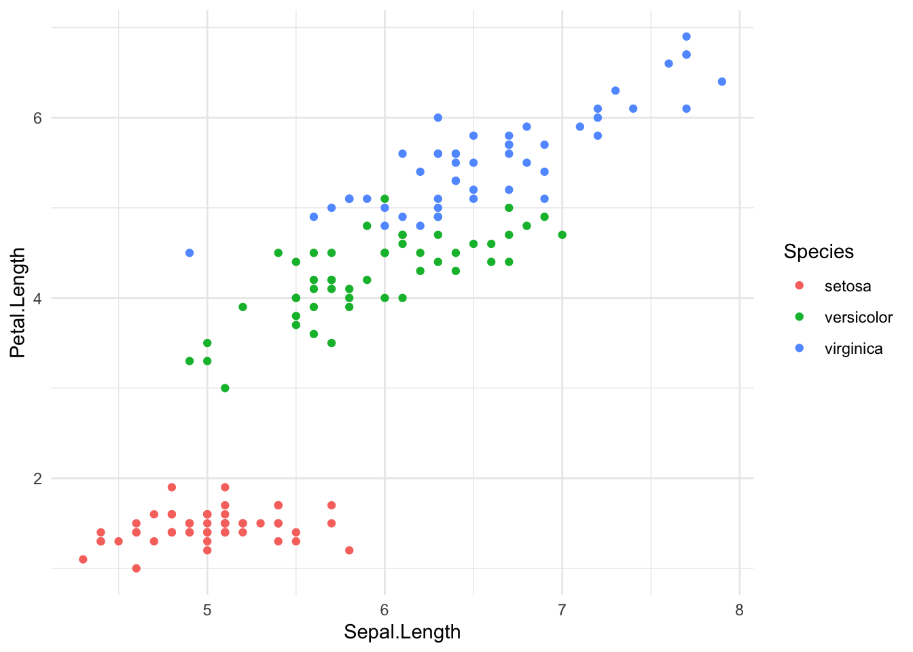

library(tidyverse)How to integrate Python code with a R environment?
R
Python
This post serves us an introduction to using Quarto (.qmd) to write a blog-style document that integrates R or Python code with text.
Quarto (.qmd) is just like RMarkdown (.rmd)!
You can open a new Quarto Document (.qmd) in Rstudio and choose HTML as the format. This works just like a traditional RMarkdown file (.rmd).
You can copy and paste the following code to the preamble (i.e., top of the document) and fill out the details:
---
title: "Give it a nice title"
author: "Your good name"
date: "today is?"
categories: [tag1, tag2, tag3...]
message: false
warning: false
---Working with R code
Inside the .qmd document, you can type text anywhere you like. To insert a code chunk, type “/” to select options from a drop-down menu (if you are using Visual editor mode). For example, I can insert the following R code chunk:
Then you can perform data analysis as usual:
data(iris)
iris %>%
group_by(Species) %>%
summarize(across(where(is.numeric), mean))# A tibble: 3 × 5
Species Sepal.Length Sepal.Width Petal.Length Petal.Width
<fct> <dbl> <dbl> <dbl> <dbl>
1 setosa 5.01 3.43 1.46 0.246
2 versicolor 5.94 2.77 4.26 1.33
3 virginica 6.59 2.97 5.55 2.03 Visualization is also easy:
ggplot(iris, aes(x = Sepal.Length, y = Petal.Length, color = Species)) +
geom_point() +
theme_minimal()
Working with Python code
Quarto document has the advantage of being able to run Python code at the same time. But this does requiries some knowledge about the language, and especially how virtual environment works for managing packages.
To do that from a RStudio environment, you have to first install reticulate package in R by running install.packages("reticulate").
After loading reticulate, you can create a virtual environment and install the required Python packages:
library(reticulate)
# create a new environment
virtualenv_create("r-reticulate")virtualenv: r-reticulate# packages to install
packages <- c("numpy==1.26.4", "pandas")
# install packages to the environment
virtualenv_install("r-reticulate", packages)Using virtual environment 'r-reticulate' ...You might have to go to Options > Python > Virtual Environment, and then select the correct Python interpreter.
Now, you can run Python code! One advantage of doing it in the Quarto document (with reticulate package) is that you can reference and transport R object directly into the Python environment by calling r.object_name:
import numpy as np
import pandas as pd
iris = r.iris # transport R object into Python
iris_groupMean = iris.groupby(['Species']).mean()
iris_groupMean Sepal.Length Sepal.Width Petal.Length Petal.Width
Species
setosa 5.006 3.428 1.462 0.246
versicolor 5.936 2.770 4.260 1.326
virginica 6.588 2.974 5.552 2.026You can do the reverse by accessing Python object in the R environment by calling py$object_name:
glimpse(py$iris_groupMean) # back to R codeRows: 3
Columns: 4
$ Sepal.Length <dbl> 5.006, 5.936, 6.588
$ Sepal.Width <dbl> 3.428, 2.770, 2.974
$ Petal.Length <dbl> 1.462, 4.260, 5.552
$ Petal.Width <dbl> 0.246, 1.326, 2.026Conclusion
Quarto document .qmd gives us an easy way to write a blog post that seamlessly integrates narrative text with code. As long as you submit a minimally reproducible Quarto document (that you can Render your document successfully), your post can be published in no time.
Furthermore, the reticulate package enables interoperability between R and Python code in the same document. Many state-of-the-art models and packages in NLP are written in Python. Hopefully, this will encourage R users to take advantage of Python packages in a familiar environment.